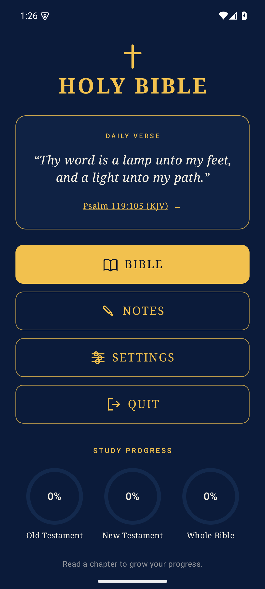
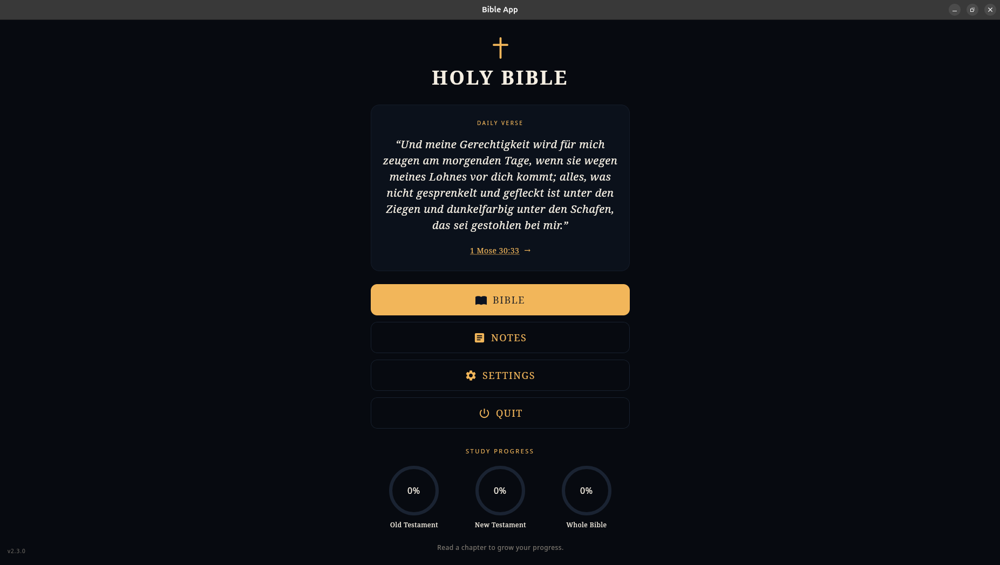
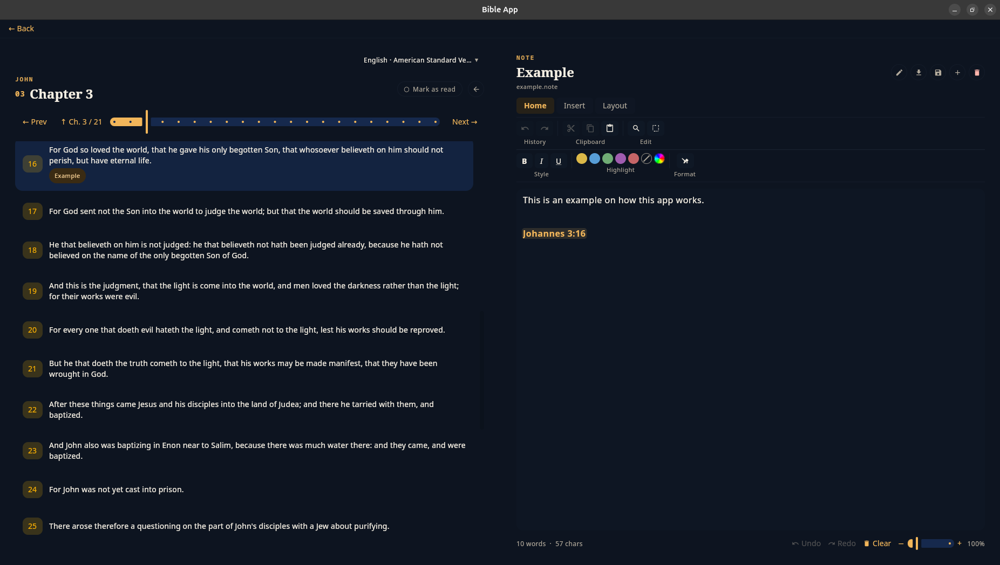

Offline scripture study
JasonBible
Linux · Windows · macOS


Offline scripture study
Linux · Windows · macOS


Grab the installer for your platform from the Releases page — every release ships all three, built automatically by CI on each native OS:
| Platform | Installer | Install with |
|---|---|---|
| 🐧 Linux | .deb |
sudo apt install ./bibleapp_<version>_amd64.deb (or the apt repo below) |
| 🪟 Windows | .msi |
double-click the installer |
| 🍎 macOS | .dmg |
open and drag to Applications |
Installers aren't committed to the repo (they'd exceed GitHub's per-file limit) — they're attached to each release instead. No internet is needed after install: every translation ships inside the app.
Add the BibleApp apt repo once, then install and update like any other package:
echo "deb [trusted=yes] https://github.com/BacroXP/JasonBible/releases/latest/download ./" | sudo tee /etc/apt/sources.list.d/bibleapp.list
sudo apt update
sudo apt install bibleappUpgrade to new versions with sudo apt upgrade bibleapp.
The repo is unsigned, hence the
[trusted=yes]flag — packages are still checksum-verified against the index (SHA256). The index and the installer are both served from the GitHub Release download URL — GitHub redirects each file there, so the ~360 MB.debnever has to live in the repo itself.apt updatemay print a warning about a missing Release file — expected for an unsigned flat repo, harmless.
| 📖 Read & study | 📝 Notes & organize |
|---|---|
| 90+ translations in 52 languages — from Luther 1912 to the Greek & Hebrew originals, switchable in Settings | Word-style ribbon toolbar with Home / Insert / Layout tabs |
Word study with Strong's numbers — tap any G/H number for the definition, root & pronunciation; hover a Hebrew/Greek word to light up every occurrence in the chapter, with the count beside the cursor |
Rich formatting: H1–H6 headings, quotes, highlights, lists, bold / italic / underline |
| Interlinear view (ΑΩ) — matching Greek beneath each verse, or word-aligned columns paired by Strong's number | Media references — @youtube:…, @spotify:…, @url:… render as chips with an in-app preview panel |
Full-text Bible search (Ctrl+F) — grouped by book, case/whole-word toggles, scope filter, plus Strong's reverse concordance (G25, H1) |
Global notes search (Ctrl+Shift+F) — full-text across every note, click-to-open |
| Jump to any verse (Ctrl+G) with book autocomplete, plus ← / → history | $Joh inline autocomplete — type a book and complete the reference; hover a reference chip to preview its verses |
| Whole-book continuous reading mode | Copy verses/ranges, export chapters & notes to PDF |
| 365-day reading plan with progress, plus a daily verse on Home | Auto-save to disk · rename notes without editing their first line · undo/redo · find & replace |
| Verse highlighting (5 colors), tags, read-tracking & favorites | Notes are plain .note files in ~/.bibleapp/notes |
| Split view — read and take notes side by side | Dark / light theme, zoom (75–200 %), sound effects, DE / EN UI |
JasonBible Phone is the Android edition — it opens on a Holy Bible home screen with a daily verse, Bible, Notes, Settings and reading progress. Bible and editor share one workspace you can swipe between.
| Phone edition | Details |
|---|---|
| Platform | Android 8.0+ (API 26) · no account · no network permission |
| Bible | KJV, Luther 1912, Greek Textus Receptus and Hebrew Westminster Leningrad Codex bundled offline · book/chapter navigation · translation switch · right-to-left Hebrew |
| Notes | File list, create/delete, auto-save, and a formatting bar for heading, bold, italic, quote, list and highlight |
| Workspace | Swipe between Bible and editor, with top tabs and a Notes shortcut |
| Home | Holy Bible main menu · daily verse · Bible, Notes, Settings & Quit · Old/New Testament and whole-Bible progress · version tag |
| Launch | Animated logo splash on a navy background |
Browse the phone branch — phone-only sources and build steps. The desktop editions stay on main.
| Version | Focus | Status |
|---|---|---|
| v1.0.0 | General — Bible reading & notes | ✅ Released |
| v2.0.0 | Media — in-app playback & rich media cards | ✅ Released |
| v2.1.0 | Quality of life — rename, hover previews, word-study hover, lean stats, auto-save | ✅ Released |
| v2.2.0 | Editor & PDF — all heading levels, marker-free editor, clean PDF export | ✅ Released |
| v2.2.1 | Fix — Enter in a numbered list no longer crashes the editor | ✅ Released |
| v2.3.0 | Reading & print — verse colors, verse cards, richer PDF, in-app updates | ✅ Released |
| v3.0.0 | Accounts — sync & cloud | 🗓 Planned |
v1.0.0 — the general app released
The core reader & note-taking experience: 90+ offline translations in 52
languages, word study with Strong's numbers, interlinear / word-aligned
views, full-text Bible search, the Word-style ribbon notes editor with rich
formatting, 365-day reading plan, PDF export, split view, highlighting,
themes and the full shortcut set.
v2.0.0 — media in development
Media becomes a first-class citizen of your notes. @youtube:…,
@spotify:…, @vimeo:…, @soundcloud:…, @url:… and @file:… tokens
render as rich chips & cards with live titles, thumbnails and progress.
An in-app media player plays YouTube, Vimeo, SoundCloud & local files
(streams resolved by the bundled yt-dlp) and embeds Spotify — with pause,
stop and a loop-forever toggle. @Phrase autocomplete searches YouTube
live, and a hover-out media panel docks under the editor for quick access.
v2.1.0 — quality of life released
Small things that remove friction: notes can be renamed without editing their
first line (the chosen name is stored separately, so the body stays exactly as
written), hovering a $Book$C$V reference in the editor shows its verses at a
glance, hovering a Hebrew/Greek word highlights every occurrence in the
chapter and shows the count next to the cursor, the editor footer keeps only
the numbers worth reading (words · characters), and notes auto-save once
typing pauses.
v2.2.0 — editor & PDF released
Word's full heading range is now one click away — H1 to H6 in the Layout
ribbon — and the source markup disappears while you write: headings, quotes,
bullets and numbered lists are drawn as you type (bullet dots and
auto-incrementing numbers included) with tighter, word-like line spacing.
PDF export now prints the note the way the editor shows it, without the
#, *, -, > and 1. characters, with real paragraph spacing and a
Page N of M footer on every page.
v2.2.1 — editor crash fix tagged
Pressing Enter inside a numbered list could close the note editor with a
Range [x, y) out of bounds error, which then had to be reopened. The editor
walked back to the previous numbered line with an off-by-one index; it now
reads that line correctly, so 1. 2. 3. … keeps counting as you type.
v2.3.0 — verse colors, cards & print released
Verses can be marked in any color from the verse detail panel, and the
reading view tints marked verses with it. Verse ranges such as
$John$3$16-21 now highlight and open as one block, and any verse or
range can be exported as a postcard (one or two verses) or a
PowerPoint slide from the verse right-click menu and the editor's
reference menu. PDF export prints the same colors as the editor,
keeps Spotify / YouTube links as their real URLs and leaves a blank
line between quoted scripture and your own words. The in-app player now uses
one card style for video, audio and Spotify, the reader no longer shows the
¶ paragraph marks, and the app checks GitHub for a new release
and can install it for you.
v3.0.0 — accounts planned
User accounts with cloud sync for notes, settings and reading progress — so
your library follows you across devices.
| Shortcut | Action | Shortcut | Action |
|---|---|---|---|
Ctrl+F | Find — Bible search / in-note find | Ctrl+Shift+F | Global notes search |
Ctrl+H | Find & replace | Ctrl+G | Jump to verse |
Ctrl+K | Insert Bible reference | Ctrl+Shift+K | Insert book reference |
Ctrl+S | Save note | Ctrl+P | Export note to PDF |
Ctrl+Z / Ctrl+Y | Undo / redo | Ctrl+A | Select all |
Ctrl+B / Ctrl+I / Ctrl+U | Bold / italic / underline | Ctrl+← / Ctrl+→ | Jump word (add Shift to select) |
Ctrl+W | Back / close | Esc | Close search / find bar |
Requires Java 17+ (JDK).
git clone https://github.com/BacroXP/JasonBible.git
cd JasonBible
./gradlew run # run from source
./gradlew desktopTest # run the unit tests
./gradlew packageDeb # build the Linux .deb (packageDmg / packageMsi on macOS / Windows)Output lands in build/compose/binaries/main/. Shipping a new version?
Follow RELEASING.md — commit, tag vX.Y.Z, and CI builds &
attaches all three installers to a new release automatically.



Every screenshot opens full size in a new tab.
| What | Where |
|---|---|
| Settings | ~/.bibleapp/private.json |
| Notes | ~/.bibleapp/notes/*.note |
| Translations | src/desktopMain/resources/bible/ (auto-detected on startup) |
| What | Progress |
|---|---|
| Editor Update | SHIPPED IN v2.2.0 |